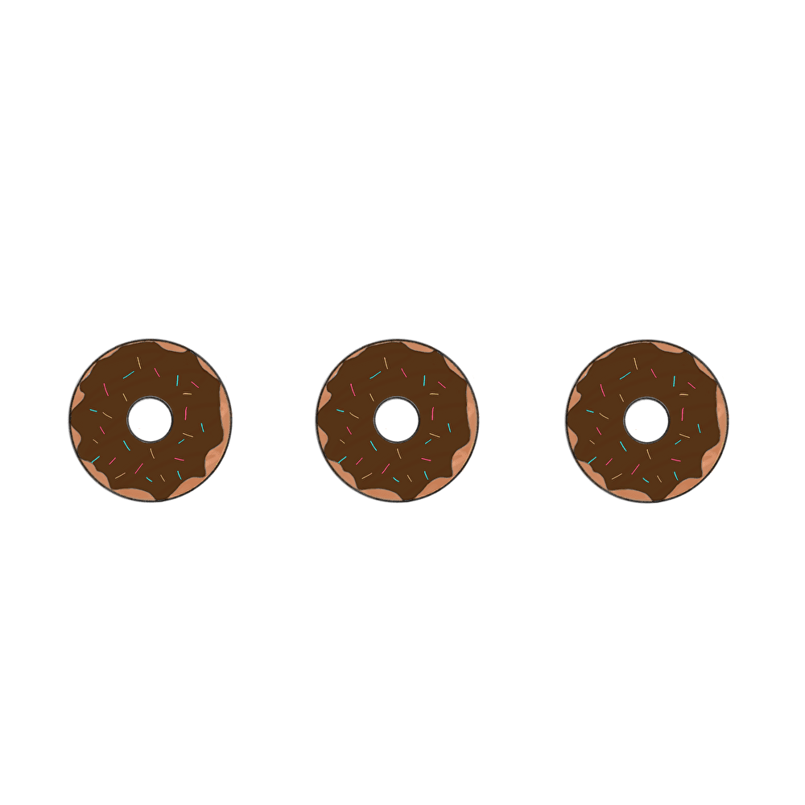
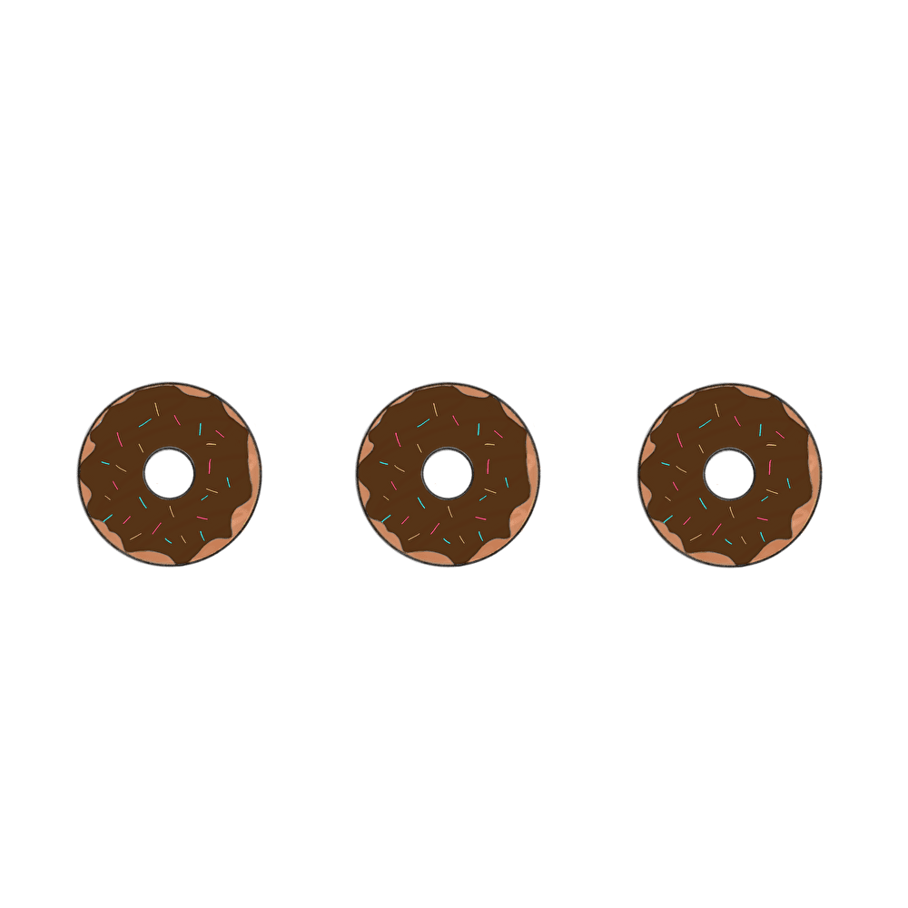
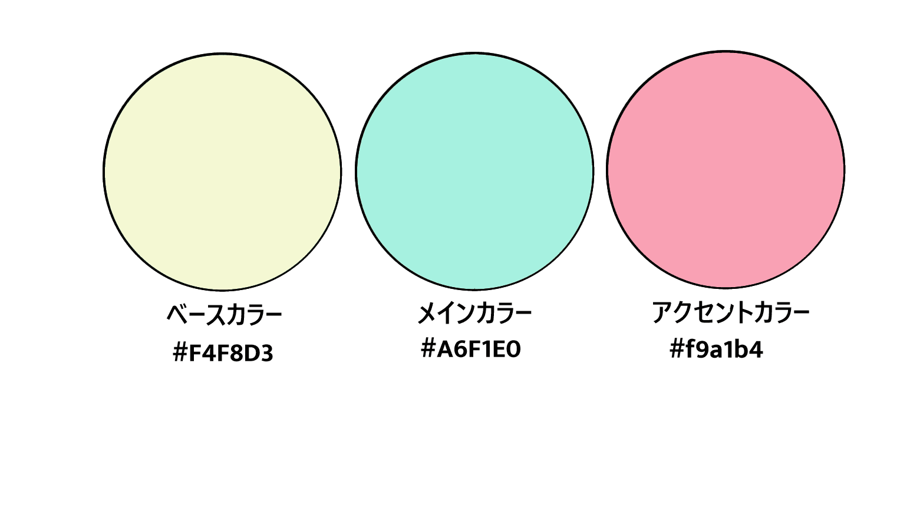

Works
-
概要
選んだ動物と一緒にタスク管理ができるTodoリスト。授業で作成した、タスク、日付を入力して追加を押すとやることリストのエリアに追加されるだけだった簡素なTodoリストに、好きな動物（ねこ・うさぎ・シマエナガ）の中から選ぶとイラストが変わる、タスクを追加・完了・削除すると、選んだ動物の画像が押したボタンによって変化する、完了したタスクを入れておくli要素を作成、などの要素を追加し、タスクをこなすたびに動物が褒めてくれる楽しいTodoを作成しました。
-
目的
自身のスキルを磨くためにJavaScriptの練習として作成しました。タスクの追加・削除・完了機能の実装や、ボタンクリックでの処理、追加したタスクの状態によってイラストを切り替える操作などを練習し、JavaScriptへの理解を深めました。
-
プログラムの流れ
-
１，好きな動物を選択
promptで1,2,3（ねこ、うさぎ、シマエナガ）の数字を入力し、選択された動物の画像を＃comp_imgに設定。
-
２，タスクの追加
＃todoInputに入力されたタスクと日付を ＃todoList に追加。
-
３，タスクの完了
完了ボタンをクリックすると#completed（完了！エリア） に移動し、動物の画像が変化する。
-
４，タスクの削除
削除ボタンをクリックするとli要素が削除され、動物の画像が最初の状態に戻る。
-
１，好きな動物を選択
-
配色
 -
制作期間
3日（デザイン素材作成1日、コーディング2日）
-
使用ツール
Visual Studio Code/ibisPaint